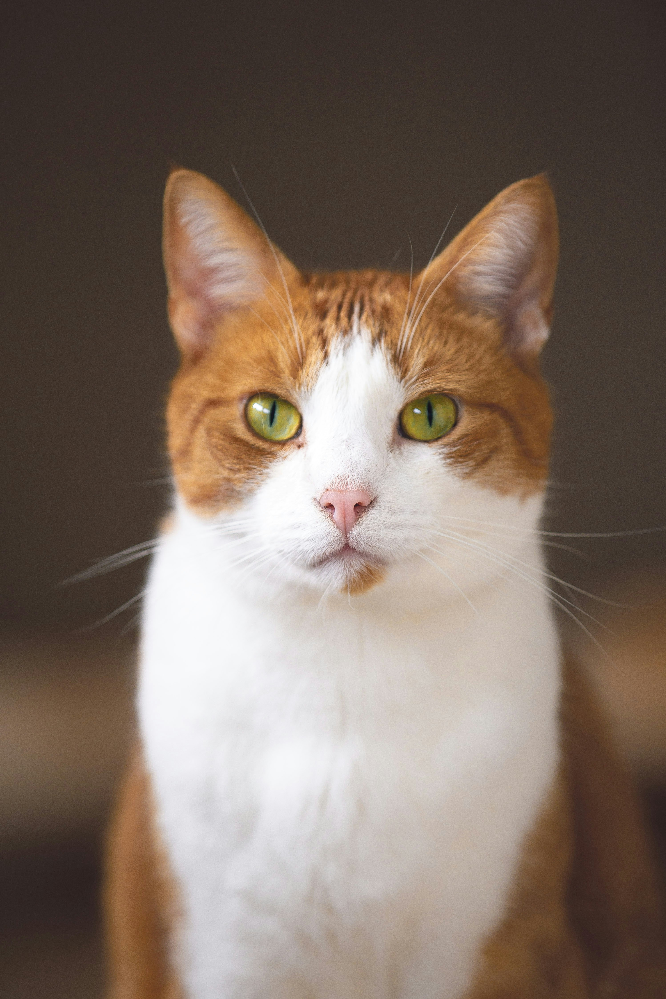

People
We have divided the tasks into four steps: the dataset, the algorithm, the web page and also the text on the web page.
(A note from the "web designer" Emma: The images of cats on the people's webpage is used to illustrate that the website can display images, without us having to provide pictures of ourselves.)

Lovisa Sjöberg
Lovisa wrote the text on the website about the process of the assignment.

Tim Magnusson
Tim made the algorithm and pseudocode written in the txt.file, based on the dataset.

Regina Hermansson
Regina made and organized the dataset with the csv.files and collected the data about the novels from Litteraturbanken.

Emma Bylin
Emma made and designed this website with HTML and CSS. With four web pages that are linked together with a navigation bar.